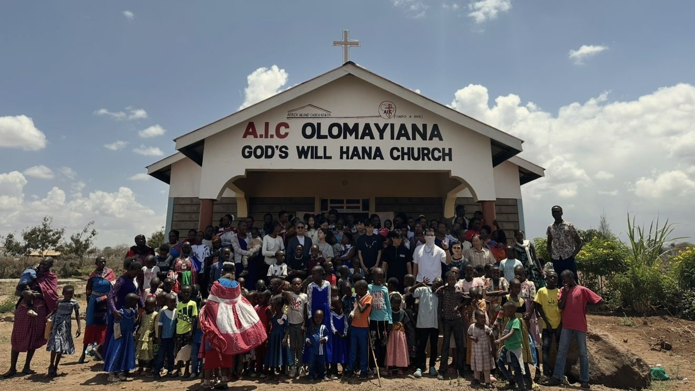

복음 전도
현지 사역자와 함께 가정을 방문하여 예수 그리스도의 복음을 전합니다.
해외선교 · FaithMission
현지 사역자와 함께 가정을 찾아가 복음을 전하고, 아픈 이들을 위해 기도하며, 선교사님들을 위로하고 축복합니다.

우리의 사역
현지 사역자와 함께 가정을 방문하여 예수 그리스도의 복음을 전합니다.
현지 사역자와 함께 가정을 방문하여 예수 그리스도의 복음을 전합니다.
아픈 현지인들을 위해 간절히 기도하며 성령의 역사를 경험합니다.
현지 사역자와 선교사님들을 찾아가 위로하고 축복합니다.
온 세대가 함께 참여하는 가족 단위 선교를 진행합니다.
함께하는 땅
현지 교회와 사역자들과 협력하여 단기 선교를 이어 갑니다.
함께하기
농협 · 높은뜻하나되는 교회
355-0602-8923-33